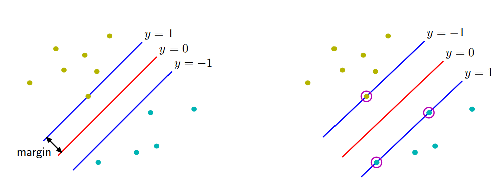
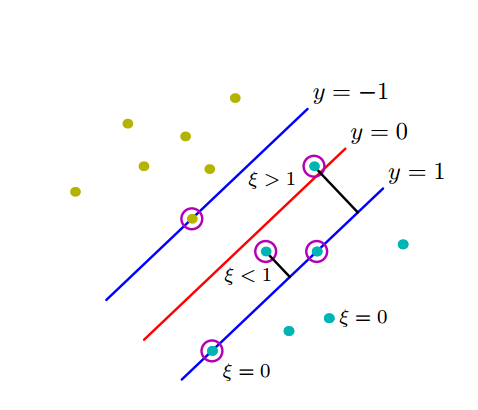
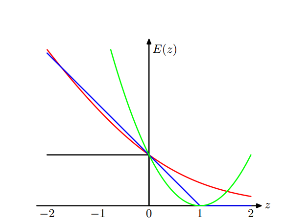

模型的定义
首先定义线性模型为
$$
y(\boldsymbol{x})=\boldsymbol{w}^{T} \boldsymbol{\phi}(\boldsymbol{x})+b
$$
其中$\boldsymbol{\phi}(\boldsymbol{x})$表示一个固定的特征空间变换，之后会用核函数$k\left(\boldsymbol{x}, \boldsymbol{x}^{\prime}\right)=\boldsymbol{\phi}(\boldsymbol{x})^{T} \boldsymbol{\phi}\left(\boldsymbol{x}^{\prime}\right)$的形式进行表达。
训练数据集为输入向量$\left\{\boldsymbol{x}_1, ..., \boldsymbol{x}_N\right\}$和对应的目标值$\left\{t_1, ..., t_N\right\}$，其中$t_n \in {-1, 1}$。假定训练数据集在特征空间中是线性可分的，即存在至少一种$\boldsymbol{w}$和$b$，能够使得$t_n=+1$时$y(\boldsymbol{x}_n)>0$，$t_n=-1$时$y(\boldsymbol{x}_n)<0$，即$t_n y(\boldsymbol{x}_n) > 0$。
新的数据点$\boldsymbol{x}$根据$y(\boldsymbol{x})$的符号进行分类，正号分为正类，负号分为负类。
支持向量寻找泛化错误最小的解的方法是，引入边缘（margin）的概念，即决策边界与任意样本之间的最小距离，如下图所示。

由于点$\boldsymbol{x}$距离超平面$y(\boldsymbol{x})$的垂直距离为
$$
\frac{|y(\boldsymbol{x})|}{|\boldsymbol{w}|}
$$
且我们只关心能够正确分类所有数据点的解，因此$t_n y(\boldsymbol{x}_n) > 0$，代入到距离公式中：
$$
\frac{|y(\boldsymbol{x})|}{|\boldsymbol{w}|} = \frac{t_n y(\boldsymbol{x}_n)}{|\boldsymbol{w}|} = \frac{t_n (\boldsymbol{w}^{T} \boldsymbol{\phi}(\boldsymbol{x_n})+b)}{|\boldsymbol{w}|}
$$
由于边缘由数据集里垂直距离最近的$\boldsymbol{x}_n$给出，我们希望最优化参数$\boldsymbol{w}$和$b$，使得这个距离能够最大化：
$$ \underset{\boldsymbol{w}, b}{\arg \max }\left\{\frac{1}{\|\boldsymbol{w}\|} \min _{n}\left[t_{n}\left(\boldsymbol{w}^{T} \boldsymbol{\phi}\left(\boldsymbol{x}_{n}\right)+b\right)\right]\right\} $$模型的转化
下面将这个最优化问题转化为一个更容易求解的等价问题。
首先注意到，如果令$\boldsymbol{w}' = \kappa \boldsymbol{w}$，$b' = \kappa b$，则任意点距离决策面的距离不会发生改变：
$$ \begin{aligned} \frac{|y'(\boldsymbol{x})|}{\|\boldsymbol{w}'\|} &= \frac{t_n (\kappa\boldsymbol{w}^{T} \boldsymbol{\phi}(\boldsymbol{x_n})+ \kappa b)}{\|\kappa \boldsymbol{w}\|} \\ &= \frac{t_n (\boldsymbol{w}^{T} \boldsymbol{\phi}(\boldsymbol{x_n})+b)}{\|\boldsymbol{w}\|} \\ &= \frac{|y(\boldsymbol{x})|}{\|\boldsymbol{w}\|} \end{aligned} $$因此不妨对$\boldsymbol{w}$和$b$进行放缩，令距离决策面最近的点满足
$$
t_{n}\left(\boldsymbol{w}^{T} \boldsymbol{\phi}\left(\boldsymbol{x}_{n}\right)+b\right)=1
$$
称为有效（active），其他数据点称为无效（inactive）。
在这种情况下，所有的数据点都满足限制
$$
t_n\left(\boldsymbol{w}^{T} \boldsymbol{\phi}\left(\boldsymbol{x}_{n}\right)+b\right) \geq 1, \quad n=1, \ldots, N
$$
根据定义，最大化边缘之后，决策超平面两侧至少有两个有效的数据点，因此有
$$ \min _{n}\left[t_{n}\left(\boldsymbol{w}^{T} \boldsymbol{\phi}\left(\boldsymbol{x}_{n}\right)+b\right)\right] = 1 $$因此最优化问题简化为（在限制条件下的）
$$
\underset{\boldsymbol{w}, b}{\arg \max }\frac{1}{|\boldsymbol{w}|}
$$
即
$$
\underset{\boldsymbol{w}, b}{\arg \min } \frac{1}{2}|\boldsymbol{w}|^{2}
$$
用拉格朗日乘数法得到对偶问题
拉格朗日乘数法请参见数学基础。
引入拉格朗日乘子$a_n \ge 0$，得到拉格朗日函数
$$ L(\boldsymbol{w}, b, \boldsymbol{a})=\frac{1}{2}\|\boldsymbol{w}\|^{2}-\sum_{n=1}^{N} a_{n}\left\{t_{n}\left(\boldsymbol{w}^{T} \boldsymbol{\phi}\left(\boldsymbol{x}_{n}\right)+b\right)-1\right\} $$将$L$分别对$\boldsymbol{w}$和$b$求导，得到
$$ \begin{aligned} \nabla_{\boldsymbol{w}} L &= \boldsymbol{w} - \sum_{n=1}^N a_n t_n \boldsymbol{\phi}(\boldsymbol{x}_{n}) = 0 \\ \frac{\partial L}{\partial b} &= \sum_{n=1}^N a_n t_n = 0 \end{aligned} $$将这两个条件代入到$L(\boldsymbol{w}, b, \boldsymbol{a})$中，消去$\boldsymbol{w}$和$b$，得到原问题的对偶表示：
$$ \begin{aligned} \tilde{L}(\boldsymbol{a}) &= \frac{1}{2} \left\| \sum_{n=1}^N a_n t_n \boldsymbol{\phi}(\boldsymbol{x}_{n}) \right\|^2 - \sum_{n=1}^N a_n t_n \boldsymbol{w}^T \boldsymbol{\phi}(\boldsymbol{x}_{n}) - \sum_{n=1}^N a_n t_n b + \sum_{n=1}^N a_n \\ &= \frac{1}{2} \sum_{n=1}^N a_n t_n \boldsymbol{\phi}(\boldsymbol{x}_{n})^T \sum_{m=1}^N a_m t_m \boldsymbol{\phi}(\boldsymbol{x}_{m}) - \sum_{n=1}^N a_n t_n \boldsymbol{\phi}(\boldsymbol{x}_{n}) \sum_{m=1}^N a_m t_m \boldsymbol{\phi}(\boldsymbol{x}_{m})^T + \sum_{n=1}^N a_n \\ &= \sum_{n=1}^N a_n - \frac{1}{2} \sum_{n=1}^N \sum_{m=1}^N a_n a_m t_n t_m \boldsymbol{\phi}(\boldsymbol{x}_{n})^T \boldsymbol{\phi}(\boldsymbol{x}_{n}) \\ &= \sum_{n=1}^N a_n - \frac{1}{2} \sum_{n=1}^N \sum_{m=1}^N a_n a_m t_n t_m k(\boldsymbol{x}_{n}, \boldsymbol{x}_{m}) \end{aligned} $$其中$k(\boldsymbol{x}_ {n}, \boldsymbol{x}_ {m}) = \boldsymbol{\phi}(\boldsymbol{x}_ {n})^T \boldsymbol{\phi}(\boldsymbol{x}_ {n})$。这一二次函数的求解将在7.1.1节中进行讨论。（到时候会有一个差不多的二次函数，我们将用SMO算法对其进行求解。）
求解对偶问题相比原问题是有优势的。原问题是在限制下求解$M$维（$M$是特征空间的维数，或者说数据的维数）的二次规划问题。对偶问题同样是求解二次规划问题，维数是$N$（数据点的个数），这种做法的优点是模型能够用核函数重新表示，这样SVM就可以被高效应用于维数超过数据点个数的特征空间，包括无穷维特征空间。
将问题通过拉格朗日乘数法转换为此对偶问题需要满足KKT条件：
$$ \begin{aligned} a_n & \ge 0 \\ t_n y(\boldsymbol{x}_n) - 1 & \ge 0 \\ a_n \left[t_n y(\boldsymbol{x}_n) - 1\right] &= 0 \end{aligned} $$这说明对于每个数据点必然有$a_n=0$或$t_n y(\boldsymbol{x}_n) = 1$。
求出分类器的形式
假定对偶问题已经得到求解，可以求出分类器的形式为
$$ \begin{aligned} y(\boldsymbol{x}) &= \boldsymbol{w}^T \boldsymbol{\phi}(\boldsymbol{x}) + b \\ &= \left[\sum_{n=1}^N a_n t_n \boldsymbol{\phi}(\boldsymbol{x}_{n})\right]^T \boldsymbol{\phi}(\boldsymbol{x}) + b \\ &= \sum_{n=1}^N a_n t_n k(\boldsymbol{x}_{n}, \boldsymbol{x})+b \end{aligned} $$可以看出，$a_n=0$的数据点对新数据点的预测没有作用，只有$t_n y(\boldsymbol{x}_n) = 1$的数据点有作用（有效），这些点被称为支持向量（support vector），它们恰好位于分类超平面距离为1的超平面上（称为最大边缘超平面）。这说明SVM具有稀疏性，训练结束之后大部分数据点都可以丢弃，只保留支持向量即可。
接下来考虑$b$的计算。由于支持向量$\boldsymbol{x}_n$满足$t_n y(\boldsymbol{x}_n) = 1$，可以利用这些支持向量求出一个数值稳定的$b$的解。令$\mathcal{S}$表示支持向量的下标集合，则
$$ \begin{aligned} y(\boldsymbol{x}_n) &= \sum_{m=1}^N a_m t_m k(\boldsymbol{x}_{m}, \boldsymbol{x}_n)+b \\ &= \sum_{m \in \mathcal{S}} a_m t_m k(\boldsymbol{x}_{m}, \boldsymbol{x}_n)+b \\ t_n y(\boldsymbol{x}_n) &= t_n \left(\sum_{m \in \mathcal{S}} a_m t_m k(\boldsymbol{x}_{m}, \boldsymbol{x}_n)+b\right) = 1 \end{aligned} $$由于$t_n^2 = 1$，两侧乘以$t_n$，再对所有的支持向量$\boldsymbol{x}_n$取平均值：
$$ \begin{aligned} \sum_{m \in \mathcal{S}} a_m t_m k(\boldsymbol{x}_{m}, \boldsymbol{x}_n)+b = t_n \\ b = t_n - \sum_{m \in \mathcal{S}} a_m t_m k(\boldsymbol{x}_{m}, \boldsymbol{x}_n) \\ \sum_{n \in \mathcal{S}} b = \sum_{n \in \mathcal{S}}\left(t_n - \sum_{m \in \mathcal{S}} a_m t_m k(\boldsymbol{x}_{m}, \boldsymbol{x}_n)\right) \\ b = \frac{1}{|\mathcal{S}|} \sum_{n \in \mathcal{S}}\left(t_n - \sum_{m \in \mathcal{S}} a_m t_m k(\boldsymbol{x}_{m}, \boldsymbol{x}_n)\right) \end{aligned} $$隐含的模型误差函数
为了接下来的模型比较，将SVM的最优化问题$\underset{\boldsymbol{w}, b}{\arg \min } \frac{1}{2}|\boldsymbol{w}|^{2}$用带有简单二次正则化项的误差函数表示，形式为
$$ \sum_{n=1}^{N} E_{\infty}\left(y\left(\boldsymbol{x}_{n}\right) t_{n}-1\right)+\lambda\|\boldsymbol{w}\|^{2} $$下面说明上述误差函数与原最优化问题的等价性。
- $E_{\infty}(z)$是一个函数，当$z \ge 0$时，函数值为0，其他情况下函数值为$\infty$。这保证了限制$t_n y\left(\boldsymbol{x}_{n}\right) \geq 1$成立，否则误差函数值将变成无穷大。
- 在保证前一项为0的前提下，正则化参数$\lambda$的实际值没有意义。
7.1.1 重叠类分布
引入松弛变量
显然训练数据点不一定是线性可分的。之前已经指出，线性可分（“硬边缘”）的SVM隐式地使用了一个误差函数，当数据点被正确分类时，这个误差函数为0，而错误分类时为无穷大。我们现在修改这种方法，使得错误分类时的惩罚不再是无穷大，而是随着分错的数据点与决策边界的距离的增大而增大，这样我们就可以得到线性不可分（“软边缘”）的SVM了。
下面引入松弛变量（slack variable）$\xi_n$。将原有的精确分类限制条件$t_n y\left(\boldsymbol{x}_ {n}\right) \geq 1$修改为$t_ n y\left(\boldsymbol{x}_ {n}\right) \geq 1 - \xi_n$，考虑以下几种情况：
- 点位于正确边界内部或边界上：原限制条件不用修改，$\xi_n = 0$
- 其他点：令$\xi_n$表示点距离正确分类边界的距离，$\xi_n = |t _ n y\left(\boldsymbol{x} _ {n}\right) - 1| = |y\left(\boldsymbol{x} _ {n}\right) - t_ n|$
- $0 < \xi_n < 1$的点位于边界内部，在决策边界的正确一侧
- $\xi_n = 1$的点位于决策面上
- $\xi_n > 1$的点位于决策边界的错误一侧

新的误差函数
现在的目标是最大化边缘并惩罚分类错误的点，于是将硬边缘SVM的误差函数$\sum_{n=1}^{N} E_ {\infty}\left(y\left(\boldsymbol{x}_ {n}\right) t_ {n}-1\right)+\lambda|\boldsymbol{w}|^{2}$修改为
$$
C\sum_{n=1}^N \xi_n + \frac{1}{2}|\boldsymbol{w}|^{2}
$$
其中参数$C>0$控制了松弛变量惩罚与最大化边缘之间的折中。由于任何被误分类的数据点都有$\xi_n > 1$，因此$\sum_n \xi_n$是误分类数据点数量的上界，相当于训练误差，因此上式可以看作是训练误差和模型参数L2正则化之和，$C$类似于作用相反的正则化系数。
当$C \rightarrow \infty$时，上式就回到了硬边缘SVM的误差函数。
用拉格朗日乘数法得到对偶问题
为了在$t_n y\left(\boldsymbol{x}_{n}\right) \geq 1 - \xi_n$和$\xi_n \ge 0$的条件下最小化误差函数，引入拉格朗日乘数${a_n \ge 0}$和${\mu_n \ge 0}$，得到拉格朗日函数
$$ L(\boldsymbol{w}, b, \boldsymbol{\xi}, \boldsymbol{a}, \boldsymbol{\mu})=\frac{1}{2}\|\boldsymbol{w}\|^{2}+C \sum_{n=1}^{N} \xi_{n}-\sum_{n=1}^{N} a_{n}\left\{t_{n} y\left(\boldsymbol{x}_{n}\right)-1+\xi_{n}\right\}-\sum_{n=1}^{N} \mu_{n} \xi_{n} $$对应的KKT条件为
$$ \begin{aligned} a_{n} \geq 0 \\ t_{n} y\left(\boldsymbol{x}_{n}\right)-1+\xi_{n} \geq 0 \\ a_{n}\left(t_{n} y\left(\boldsymbol{x}_{n}\right)-1+\xi_{n}\right)=0 \\ \mu_{n} \geq 0 \\ \xi_{n} \geq 0 \\ \mu_{n} \xi_{n}=0 \end{aligned} $$下面对$\boldsymbol{w}$、$b$和${\xi_n}$求偏导：
$$ \begin{aligned} \frac{\partial L}{\partial \boldsymbol{w}} &= \boldsymbol{w} - \sum_{n=1}^{N} a_{n} t_{n} \boldsymbol{\phi}\left(\boldsymbol{x}_{n}\right) = 0 \\ \frac{\partial L}{\partial b} &= \sum_{n=1}^N a_n t_n = 0 \\ \frac{\partial L}{\partial \xi_n} &= C - a_n - \mu_n = 0 \end{aligned} $$使用上述结果从拉格朗日函数中消去$\boldsymbol{w}$、$b$和${\xi_n}$，得到拉格朗日函数的对偶形式：
$$ \tilde{L}(\boldsymbol{a})=\sum_{n=1}^{N} a_{n}-\frac{1}{2} \sum_{n=1}^{N} \sum_{m=1}^{N} a_{n} a_{m} t_{n} t_{m} k\left(\boldsymbol{x}_{n}, \boldsymbol{x}_{m}\right) $$上述函数形式与硬边缘SVM完全相同，区别在于限制条件。由于$a_n, \mu_n \ge 0$，$a_n = C - \mu_n$，因此有$0 \le a_n \le C$，且要求$\sum_{n=1}^N a_n t_n = 0$。
求出分类器的形式
假设${a_n}$已经求出，下面求解分类器的形式。
将$\boldsymbol{w} = \sum_{n=1}^{N} a_{n} t_{n} \boldsymbol{\phi}\left(\boldsymbol{x}_{n}\right)$代入$y(\boldsymbol{x}) = \boldsymbol{w}^T \boldsymbol{\phi}(\boldsymbol{x}) + b$中，得到与之前相同的分类器形式
$$
y(\boldsymbol{x}) = \sum_{n=1}^N a_n t_n k(\boldsymbol{x}_{n}, \boldsymbol{x})+b
$$
同样，$a_n = 0$的点对上述模型没有贡献；$a_n \neq 0$的数据点称为支持向量，它们满足$a_n > 0$，因此根据KKT条件，必然有
$$ t_ {n} y\left(\boldsymbol{x}_ {n}\right) = 1 - \xi_ {n} $$下面讨论$a_n$和$C$的关系：
- 如果$a_n < C$：由于$C - a_n - \mu_n = 0$，有$\mu_n > 0$；根据KKT条件的$\mu_{n} \xi_{n}=0$，得到$\xi_n = 0$，这些点位于正确边界内部或边界上
- 如果$a_n = C$：此时$\mu_n = 0$，由KKT条件（不等式约束的两个0不同时取到），此时$\xi_n > 0$，说明这些点位于边缘内部，且$\xi_n < 1$时被正确分类，$\xi_n \ge 1$时分类错误
最后求解参数$b$。和之前一样，可以通过对所有满足$\xi_n = 0$（即$t_{n} y\left(\boldsymbol{x}_{n}\right)=1$）的支持向量取平均值，得到
$$ b=\frac{1}{N_{\mathcal{M}}} \sum_{n \in \mathcal{M}}\left(t_{n}-\sum_{m \in \mathcal{S}} a_{m} t_{m} k\left(\boldsymbol{x}_{n}, \boldsymbol{x}_{m}\right)\right) $$ν-SVM
$\nu$-SVM是支持向量机的另一种等价形式，它的构造方法为
$$ \begin{aligned} &\underset{\mathbf{w} \in \mathcal{H}, \boldsymbol{\xi} \in \mathbb{R}^{m}, \rho, b \in \mathbb{R}}{\operatorname{minimize}} \quad & \tau(\mathbf{w}, \boldsymbol{\xi}, \rho)=\frac{1}{2}\|\mathbf{w}\|^{2}-\nu \rho+\frac{1}{m} \sum_{i=1}^{m} \xi_{i}\\ &\text { subject to } \quad & y_{i}\left(\left\langle\mathbf{x}_{i}, \mathbf{w}\right\rangle+ b\right) \geq \rho-\xi_{i}, i=1, \ldots, m\\ &\text { and } \quad & \xi_{i} \geq 0, \quad \rho \geq 0 \end{aligned} $$对偶函数为
$$ \tilde{L}(\boldsymbol{a})=-\frac{1}{2} \sum_{n=1}^{N} \sum_{m=1}^{N} a_{n} a_{m} t_{n} t_{m} k\left(\boldsymbol{x}_{n}, \boldsymbol{x}_{m}\right) $$限制条件为
$$ \begin{aligned} 0 \le a_n \le \frac{1}{N} \\ \sum_{n=1}^N a_n t_n = 0 \\ \sum_{n=1}^N a_n \ge \nu \end{aligned} $$这种方法的优点是，参数$\nu$代替了参数$C$，它既可以被看做边缘错误（margin error）（$\xi_n \ge 0$的点）的上界，也可以被看做支持向量比例的下界。具体可以参见A Tutorial on ν-Support Vector Machines中的第6节。
用SMO算法求解参数
公式$\tilde{L}(\boldsymbol{a})$通常是二次的，且限制条件定义了一个凸区域，因此任意局部最优解也是全局最优解。下面列出一些常见的求解方法：
- 分块（chunking）：将完整的二次规划问题分解为一系列小的二次规划问题，小问题的目标是找到所有的非零拉格朗日乘数，并丢弃其他的乘数
- 分解（decomposition）
- SMO（sequential minimal optimazation）：每次只选择两个拉格朗日乘数，求出子问题的解析解
下面给出一个简化的SMO算法的描述。
首先选择两个参数$a_i$和$a_j$。选择方法是，首先选出一个（在一定数值范围内）不满足KKT条件（$a_{n} \geq 0$且$a _ {n}\left(t _ {n} y\left(\boldsymbol{x} _ {n}\right)-1+\xi _ {n}\right)=0$）的$a_i$，然后随机选择$a_j$。（这一简化使得算法不一定能收敛到全局最优解）
然后计算出$a_j$的下界$L$和上界$H$：
- 如果$t_i \neq t_j$，则$L = \max{(0, a_j - a_i)}$，$H = \min{(C, C+a_j-a_i)}$
- 如果$t_i = t_j$，则$L = \max{(0, a_i + a_j - C)}$，$H = \min{(C, a_i+a_j)}$
求出最大化目标函数的$a_j = a_j - \frac{y_j (E_i - E_j)}{\eta}$，其中
- $E_k = f(\boldsymbol{x}_k) - t_k$
- $\eta = 2k(\boldsymbol{x}_i, \boldsymbol{x}_j) - k(\boldsymbol{x}_i, \boldsymbol{x}_i) - k(\boldsymbol{x}_j, \boldsymbol{x}_j)$（如果$\eta=0$，则换一对$a_i$，$a_j$）
将$a_j$限制在$[L, H]$范围内：
$$ a_j = \begin{cases} H & \text{if} \, a_j > H \\ a_j & \text{if} \, L \le a_j \le H \\ L & \text{if} \, a_j < L \\ \end{cases} $$然后计算出$a_i$的值：
$$
a_{i} = a_{i}+t_i t_j\left(a_{j}^{(\text {old })}-a_{j}\right)
$$
最后计算出相应的$b$的值：
$$ \begin{aligned} b_1 &= b - E_i - t_i(a_i - a_i^{(\text{old})})k(\boldsymbol{x}_i, \boldsymbol{x}_j) - t_j(a_j - a_j^{(\text{old})})k(\boldsymbol{x}_i, \boldsymbol{x}_j) \\ b_2 &= b - E_j - t_i(a_i - a_i^{(\text{old})})k(\boldsymbol{x}_i, \boldsymbol{x}_j) - t_j(a_j - a_j^{(\text{old})})k(\boldsymbol{x}_i, \boldsymbol{x}_j) \end{aligned} $$ $$ b = \begin{cases} b_1 & \text {if} \quad 0说实话，这段代码的数值稳定性不是很好，我都不知道自己写对了没有。下面的输出看起来还不错，但是所有的$a_i=C$，不禁令人怀疑有什么问题。

核函数和维度灾难
核函数对应于特征空间中的内积。特征空间可以是高维的，甚至是无穷维的。
（这一段我实在不知道他在说什么……）
用SVM预测概率
为了用SVM预测概率，可以用logistic sigmoid函数拟合训练过的SVM的输出。假设需要求解的条件概率具有以下形式：
$$
p(t=1 | \boldsymbol{x})=\sigma(A y(\boldsymbol{x})+B)
$$
- $y(\boldsymbol{x}) = \boldsymbol{w}^{T} \boldsymbol{\phi}(\boldsymbol{x})+b$
- 参数$A$和$B$的值通过最小化交叉熵误差函数确定
- 为了防止过拟合，用于拟合sigmoid函数的数据需要独立于训练原始SVM的数据
这种两阶段的方法等价于假设支持向量机的输出$y(\boldsymbol{x})$表示属于类别$t=1$的$\boldsymbol{x}$的对数概率。由于SVM的训练过程并没有体现这种倾向，因此SVM给出的对后验概率的近似结果比较差。
7.1.2 与logistic回归的关系

上图中$z = yt$。
误分类误差函数（图中的黑色线）的含义为，$z > 0$（分类正确）时误差函数为0，否则为1。
铰链误差函数（图中的蓝色线）是软边缘SVM的误差函数，是对误分类误差函数的一个近似，$z >= 1$（点位于正确分类边界一侧）时误差函数为0，否则误差函数随点距边界的距离线性增长。
红色线是放缩过的logistic回归的误差函数，也可以被看成是对误分类误差函数的近似。
绿色线是平方和误差函数。
铰链误差函数
硬边缘SVM和软边缘SVM的误差函数都可以用最小化正则化来表示：
$$\sum_{n=1}^{N} E_ {\infty}\left(y\left(\boldsymbol{x}_ {n}\right) t_ {n}-1\right)+\lambda|\boldsymbol{w}|^{2}$$
$$
C\sum_{n=1}^N \xi_n + \frac{1}{2}|\boldsymbol{w}|^{2}
$$
对于软边缘SVM：
- 对于$y_n t_n > 1$的数据点（完全正确分类），有$\xi_n = 0$
- 对于其他数据点，有$\xi_n = 1 - y_n t_n$
因此可以将软边缘SVM的误差函数改写为
$$
\sum_{n=1}^{N} E_{S V}\left(y_{n} t_{n}\right)+\lambda|\boldsymbol{w}|^{2}
$$
其中
- $\lambda = (2C)^{-1}$
- $E_{S V}$是铰链（hinge）误差函数，定义为$E_{S V}\left(y_{n} t_{n}\right)=\left[1-y _ {n} t _ {n}\right] _ {+}$，其中$[\cdot] _+$表示正数部分
logistic回归的误差函数
可以通过对似然函数取负对数的方式构造一个误差函数。带有正则化项的误差函数的形式为
$$
\sum_{n=1}^{N} E_{L R}\left(y_{n} t_{n}\right)+\lambda|\boldsymbol{w}|^{2}
$$
其中
$$
E_{L R}(y t)=\ln (1+\exp (-y t))
$$
这一误差函数的形式与支持向量机的误差函数类似。
平方和误差函数
这一误差函数会着重强调那些被正确分类的在正确的一侧距离决策边界较远的点。
7.1.3 多类SVM
// TODO
7.1.4 回归问题的SVM
// TODO
7.1.5 计算学习理论
// TODO